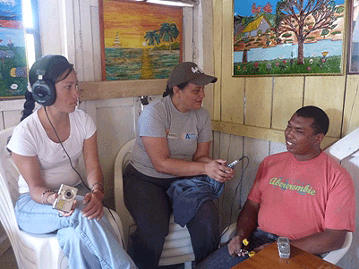

Los capacitadores
Thomas Hakenholz y Elphege Berthelot, miembros de un colectivo francés, son los capacitadores. El señor Hakenholz es hijo del topógrafo Denis Hakenholz quien vino con el grupo Eléctricos sin Fronteras de Francia para trabajar en los estudios de HidroÍntag. Según el señor Hakenholz, decidió hacer un proyecto de audiovisuales porque su padre le contó maravillas sobre Intag. Los preparativos para el proyecto se demoraron un año. En Marcella, ciudad en donde vive, el señor Hakenholz ha capacitado a niños y adultos en audiovisuales. Su título es de geógrafo pero le interesa trabajar directamente con la gente. La idea es que la comunidad se apropie del audiovisual a fin de difundir su propia visión.
La mayoría de documentales los ha hecho sin dinero en su tiempo libre. Tuvo el financiamiento del Estado en una sola ocasión para publicar un video. Asimismo, el señor Hakenholz dijo que la difusión de un documental hace posible contactos con otras organizaciones y el intercambio de experiencias. Lo importante es compartir las experiencias con otros documentalistas, aseguró el señor Hakenholz.
Futuros documentalistas inteños
Los documentales son una fuerza para que las comunidades u organizaciones digan al mundo lo que piensan, como ven las cosas y como viven.
En cuanto al grupo que el señor Hakenholz está capacitando en Íntag, espera que se consolide para que al final pueda hacer los documentales. Para esto, tendrá que buscar financiamiento. De la Zona podría salir una gran variedad de videos. También se puede hacer retratos de personajes.
Para la señorita Berthelot, el audiovisual es una forma de decir las cosas. En vista que su madre trabaja en diseño, tiene la afición desde pequeña por la cámara y la filmadora. A temprana edad ya “hice unas filmaciones en la escuela”.
En cuanto a los documentales, la señorita Berthelot, al igual que su compañero, dijo que en Íntag sí hay material: cómo vive la gente, como se ha organizado, en fin.
Cuando salga de Íntag, la señorita Berthelot viajará a Brasil para terminar un documental de un pueblo de pescadores. En esa comunidad la gente defiende su tierra y su agua. Como en todas partes, las grandes empresas quieren entrar donde no las invitan. En el pueblo mencionado, quieren hacer hoteles, hosterías y hasta pesca industrial.
Como parte de la capacitación, cuatro personas viajaron a Quito para participar del X Festival Internacional de Cine y Video de los Pueblos Indígenas. Presentaron los siguientes documentales, entre otros: Sembradores de Agua y Vida (México), Madre Agua que Nos Crías y Soberanía Alimentaria de los Andes (Perú), Lágrimas de Agua e Historia de la Nacionalidad Awa (Ecuador), Entre dos Mundos y Mensaje de Ancianos y Jóvenes Mapuches (Chile) y Todos Juntos (Paraguay).
En estos documentales los pueblos indígenas muestran la lucha por su tierra y el agua, y en contra de las mineras y petroleras. La gente de Íntag vio los documentales mencionados. La agenda del X Festival fue del 6 al 11 de octubre.
En cuanto al grupo VOCES, ya han hecho presentaciones de pequeños documentales en Santa Rosa, Plaza Gutiérrez, Pucará y en la parroquia de Peñaherrera. La idea es que la gente se acostumbre a ver documentales de otras comunidades de pueblos indígenas y campesinos. En fin, muchos documentales que pueden servir para potenciar la zona. Lo que no puede faltar en las presentaciones es el canguil. Si alguna comunidad está interesada en que se presente un documental, el grupo VOCES estará gustoso de complacerlos.